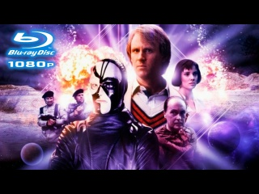
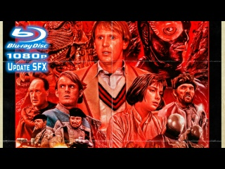
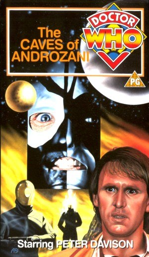
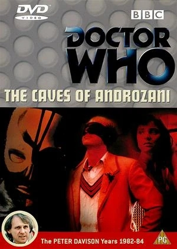
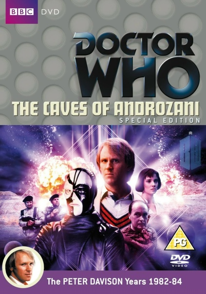
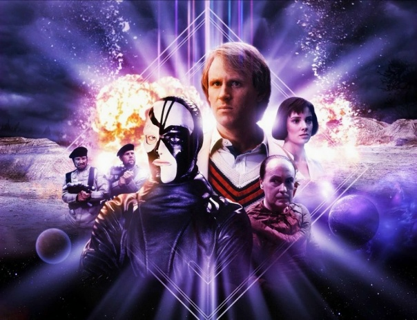
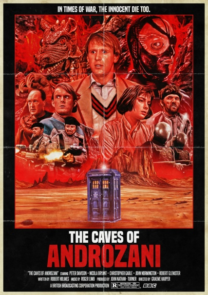
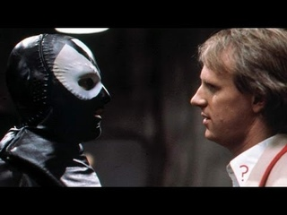

MVO [RedDiamond Studio] или Original [ENG] Субтитры: Русские и Английские |  |
|---|---|
с обновленными спецэффектами MVO [RedDiamond Studio] или Original [ENG] Субтитры: Русские и Английские |  |
The Caves of Androzani
Дата выхода: 8-16 марта 1984
Формат: 4 эпизода по 25 мин.
|
ТАРДИС прибывает на Андрозани Минор — планету, где в пещерах добывают спектрокс, вещество, дарующее невероятное долголетие. Планетой фактически правит Шараз Джек — гениальный, но обезображенный учёный, ведущий войну с корпорацией жадного магната Моргуса. Доктор и Пери с первых минут заражаются спектроксовой токсемией — смертельным отравлением, и единственное лекарство — молоко королевы летучих мышей из самых глубоких пещер. Доктору предстоит пробиться через перестрелки, предательства и наёмников, чтобы спасти Пери.
Последняя серия Пятого Доктора и, по мнению многих фанатов, одна из лучших за всю историю сериала. Сценарий написал Роберт Холмс — его последняя работа для «Доктора Кто». Фишка в том, что Доктор здесь почти не спасает других — он сам жертва, отчаянно борющийся за жизнь Пери. В финале он отдаёт ей единственную дозу лекарства и регенерирует в Шестого Доктора (Колин Бейкер), который впервые появляется прямо в финале серии.
 VHS - февраль 1992 |  DVD - 18 июня 2001 |
|---|---|
  DVD-SE+Boxset - 4 октября 2010 |  Blu-ray - 16 марта 2026 * Версия в нашей группе |


